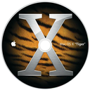

Mac OS X Tiger
Apple · Mac OS X 10.4, 2005
Tiger (10.4, shipped 29 April 2005) is the Mac OS X many people remember as the classic one: Aqua Blue, a frosted dock without the old pinstripes, and the Finder in brushed metal.
It brought Spotlight to the menu bar, Dashboard with its widgets, Automator, Safari RSS and Mail 2 — and in 2006 it was the first Mac OS X to run on Intel Macs.
What this theme does
- Brushed-metal title bars instead of 10.0's pinstripes.
- The frosted dock with black triangles under running apps.
- The blue Aqua Apple in the menu bar.
- Ten of Tiger's own desktop pictures, from Aqua Blue and Aqua Graphite to Lotus, Leaf Curl and the tiger's fur.
- Dashboard on the desktop, Tiger's Apple icons for the apps you run.
ⓘ Did you know…
Spotlight first. Tiger's search indexed the whole disk as you saved, and put the field in the top-right corner, where it still is.
Two Tigers. 10.4.4 was the first release for Intel Macs; the same version number ran on PowerPC and Intel.
The Finder and Spotlight here are RetroMac's. Open Macintosh HD on the desktop for the metal Finder, click the blue magnifier for Spotlight; both work on your real files and the Mac's own search index.